In this writing, I want to share how a simple UI change in Power BI Desktop sparked my curiosity to deep dive into the PBIR format, and ultimately changed how I think about report maintenance at scale.
1. The Moment Curiosity Turned Into Action
I didn't expect "hide filters from view mode" to become a DevOps conversation. My plan was simple: clean up the Filters pane for end users by hiding visual-level filters they don't need to see. Instead, I found myself staring at JSON diffs in VS Code, realizing that what used to take dozens of clicks now leaves a traceable, reviewable, automatable trail.
My journey started with a Contoso Sales report, five visuals on a single page. Each visual had filters that cluttered the Filters pane for report consumers. In the old days (before PBIR), I would click each visual, expand the Filters pane, and toggle the eye icon for every single filter. Miss one? You won't know until someone complains. Want to apply the same standard across 50 reports? Good luck.
That era is officially ending.
2. What Changed? The PBIR Default-Omission Pattern
Here's the first aha moment that reshaped my understanding: Power BI doesn't write default values to PBIR files.
When I examined the visual.json files before making any changes, I expected to see something like "isHiddenInViewMode": false for each filter. It wasn't there. The property simply didn't exist.
The same was true for "Maintain layer order", a setting under Format > Properties > Advanced options that controls whether visuals stay in their defined z-order during interactions. Before enabling it, there was no keepLayerOrder property anywhere in the code.
I noticed that PBIR doesn't write default values to the JSON files. Properties like isHiddenInViewMode or keepLayerOrder simply don't exist until I change them from their defaults.
This design choice has profound implications:
- I can't search for "all filters that are visible" because visibility is represented by absence
- I can't diff "before vs. after" for default states because there's no "before" to compare
- I must understand the defaults to interpret what the code actually means
3. The Journey: Hiding Filters from the Filters Pane
Let me walk through exactly what happened when I hid the visual-level filters.
Before: Filters Visible in the Filters Pane
The Filters pane shows all visual-level filters visible: Month, Total Sales, Brand, and others. Each has an eye icon indicating it's visible to report consumers.
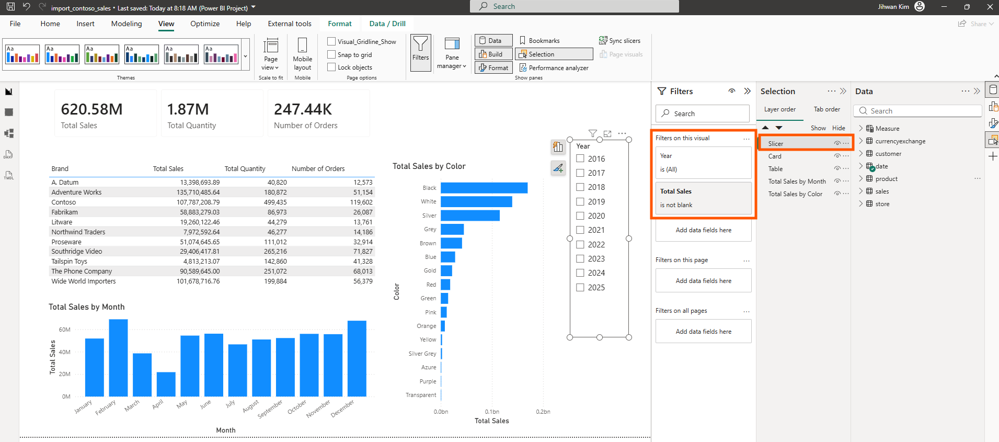
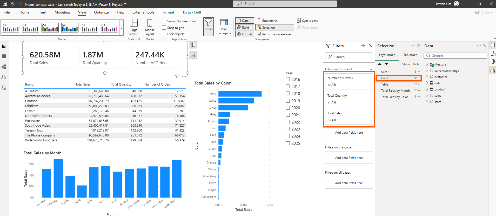
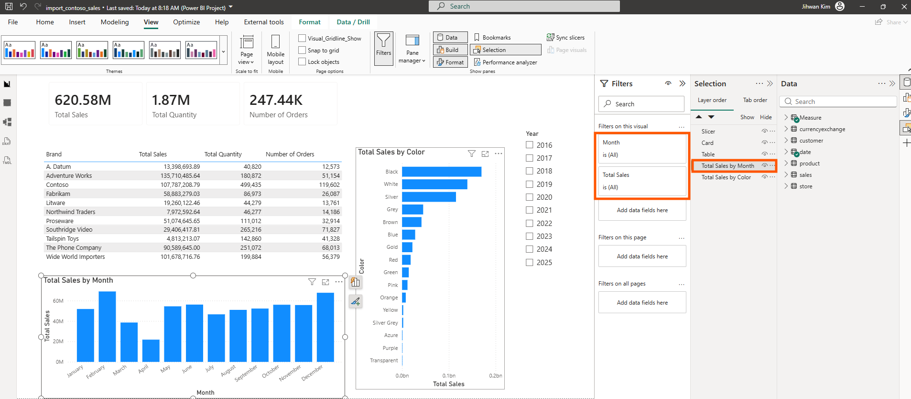
After: Filters Hidden from the Filters Pane
After toggling "Hide filter" for each one, the eye icons are now crossed out, indicating these filters won't be visible to report consumers in view mode.
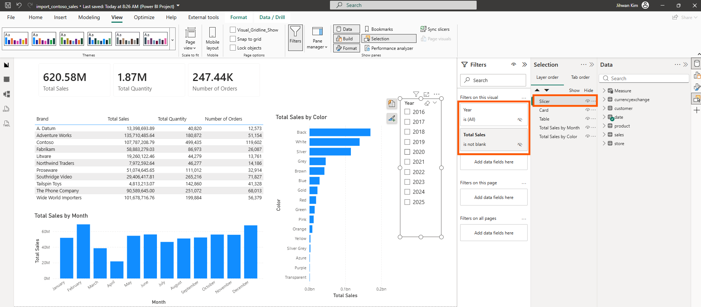
The Code Change in VS Code
Here's where PBIR shines. In VS Code, the diff for each visual.json showed a clean, surgical change:
{
"name": "c819cfc2885b9c9038c5",
"field": { ... },
"type": "Categorical",
"isHiddenInViewMode": true
}The only addition was "isHiddenInViewMode": true at the end of each filter object within filterConfig.filters. It captured this change across all five visuals in a single, reviewable unit.
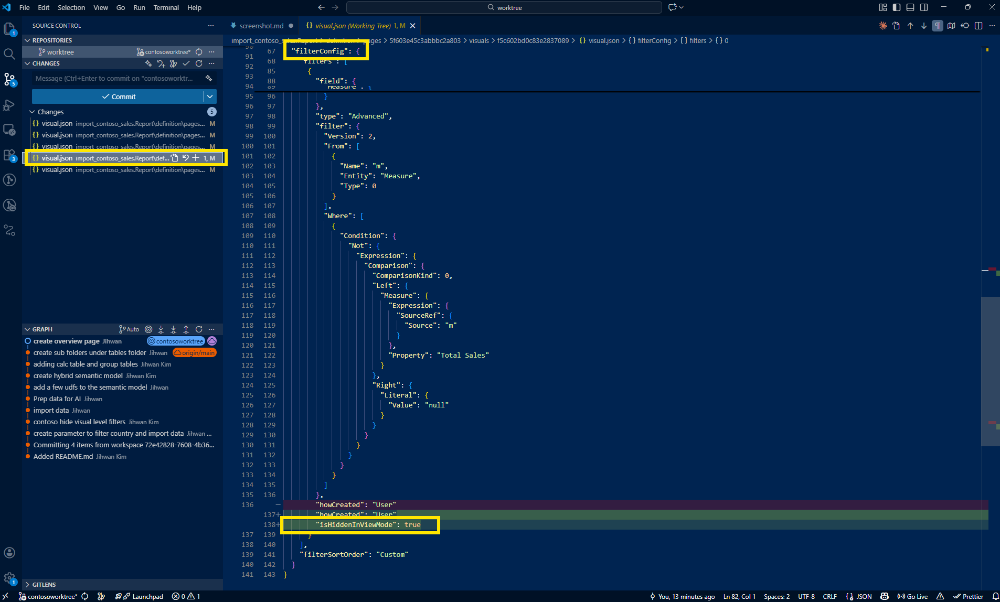
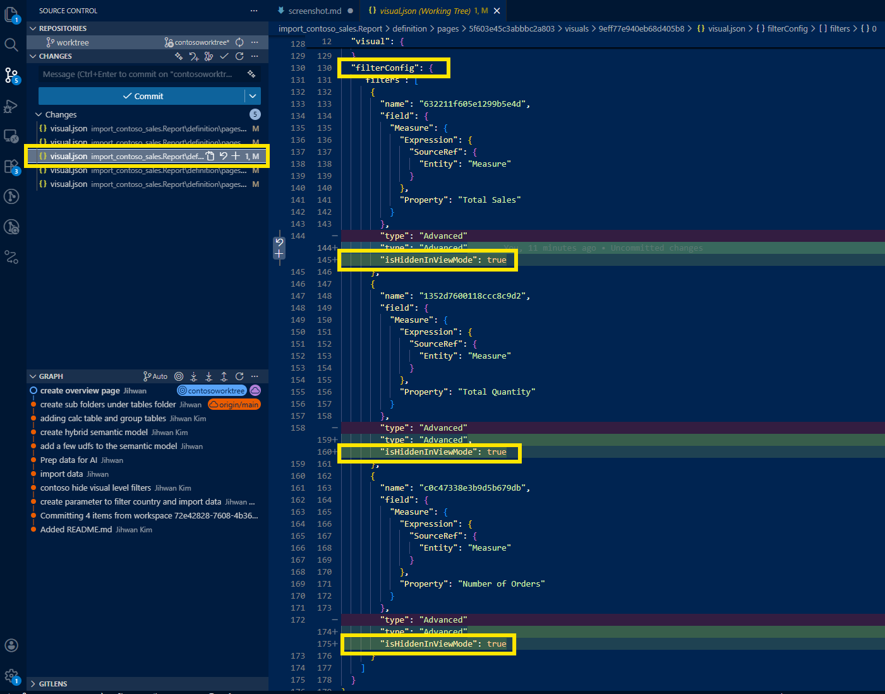
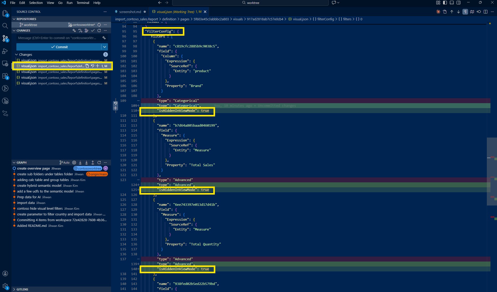
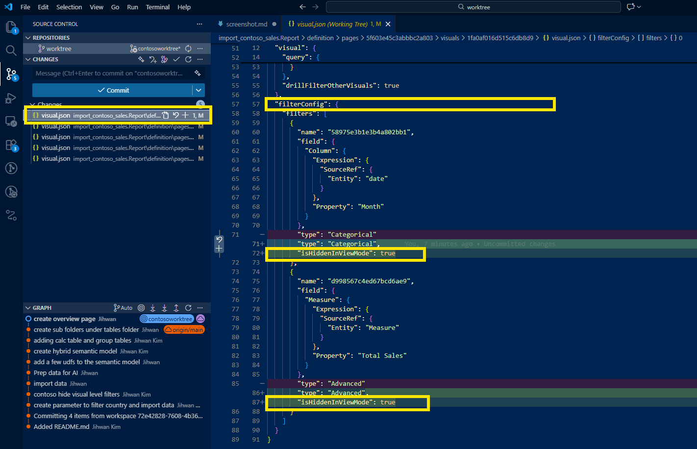
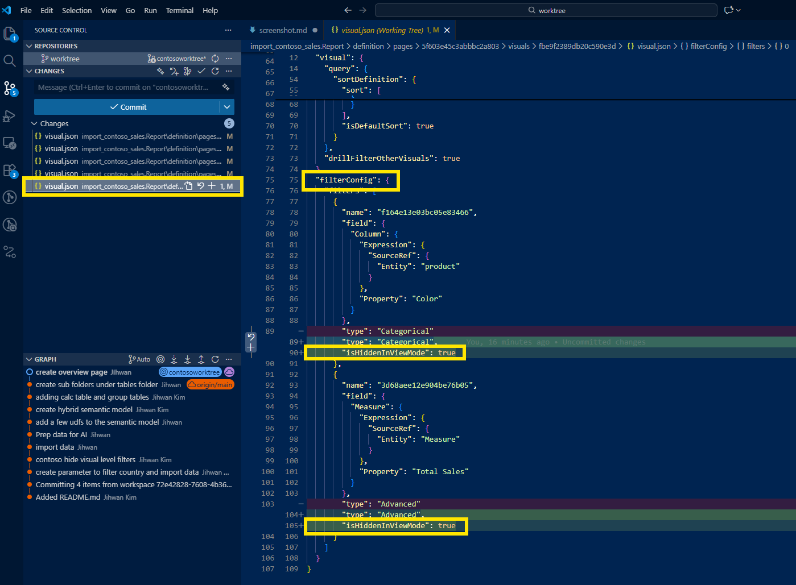
4. The Journey: Enabling Maintain Layer Order
The second change followed a similar pattern but affected a different part of the JSON structure.
Before: Maintain Layer Order Disabled
The Selection pane shows the layer order (Slicer, Card, Table, Total Sales by Month, Total Sales by Color), but the "Maintain layer order" toggle under Format > Properties > Advanced options is off.
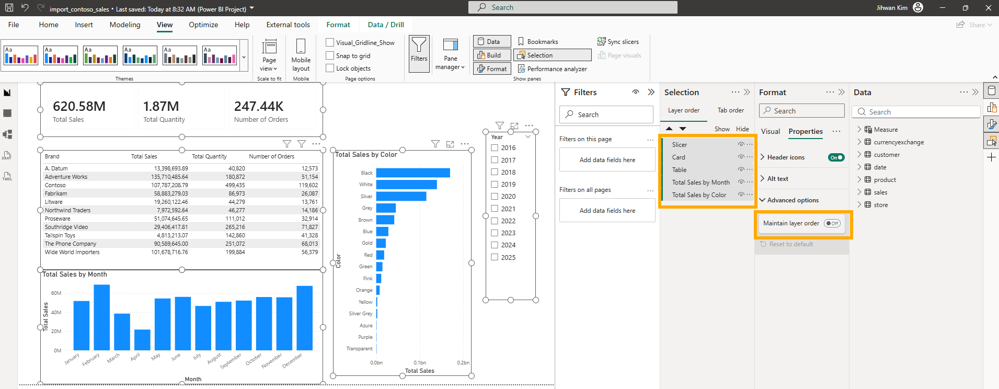
After: Maintain Layer Order Enabled
With the toggle enabled, visuals now respect their z-order during interactions, critical for reports with overlapping elements or layered designs.
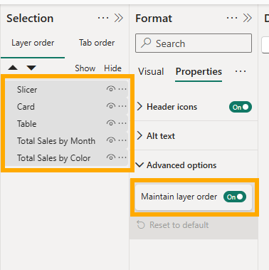
The Code Change in VS Code
This time, an entirely new block appeared in each visual.json:
"visualContainerObjects": {
"general": [
{
"properties": {
"keepLayerOrder": {
"expr": {
"Literal": {
"Value": "true"
}
}
}
}
}
]
}It added these 15 lines to each of the five visual.json files, 75 lines total, all traceable in Git history.
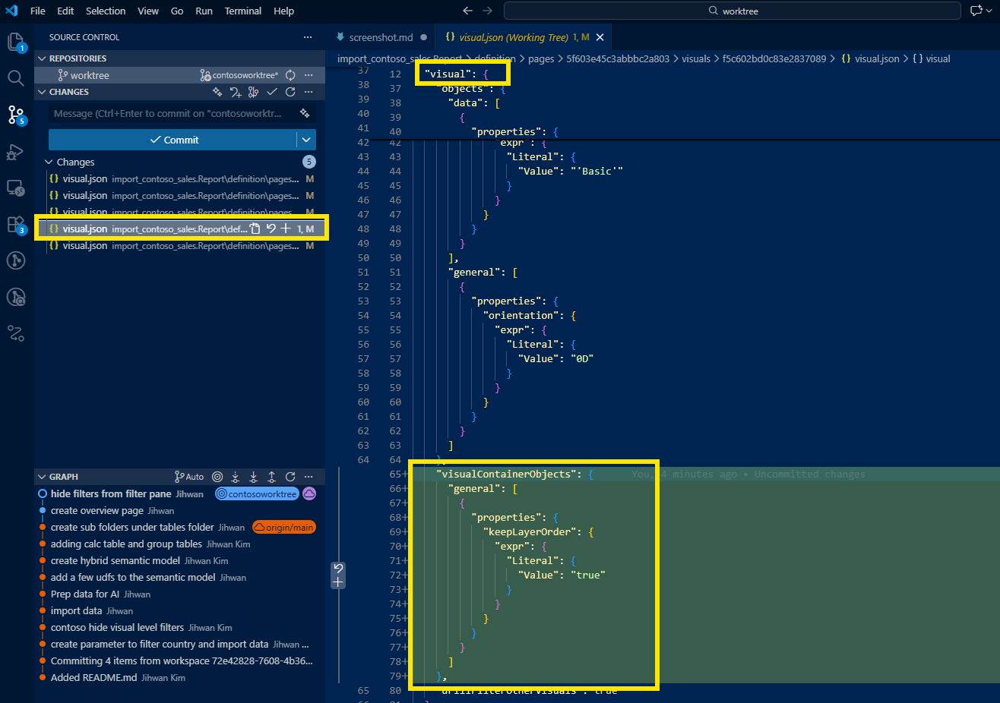
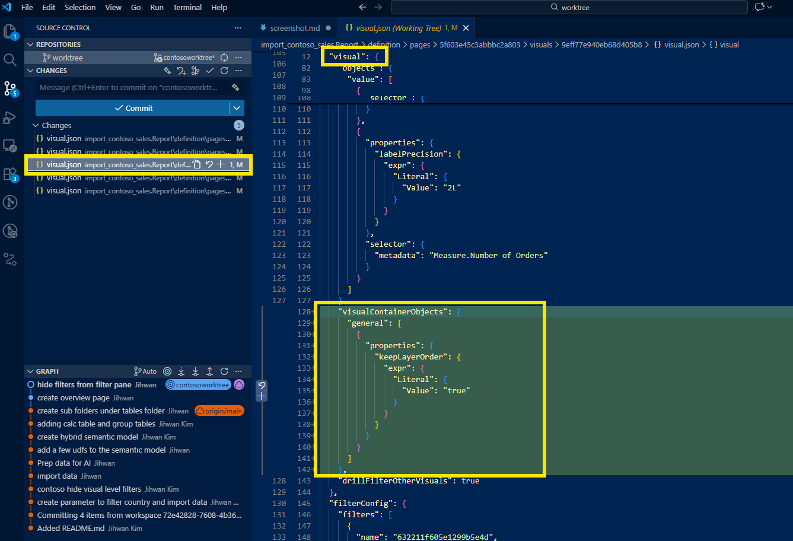
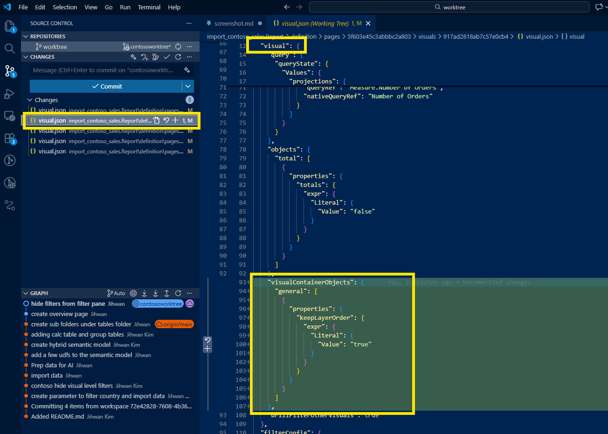
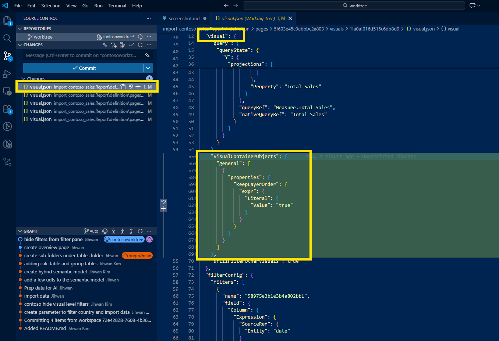
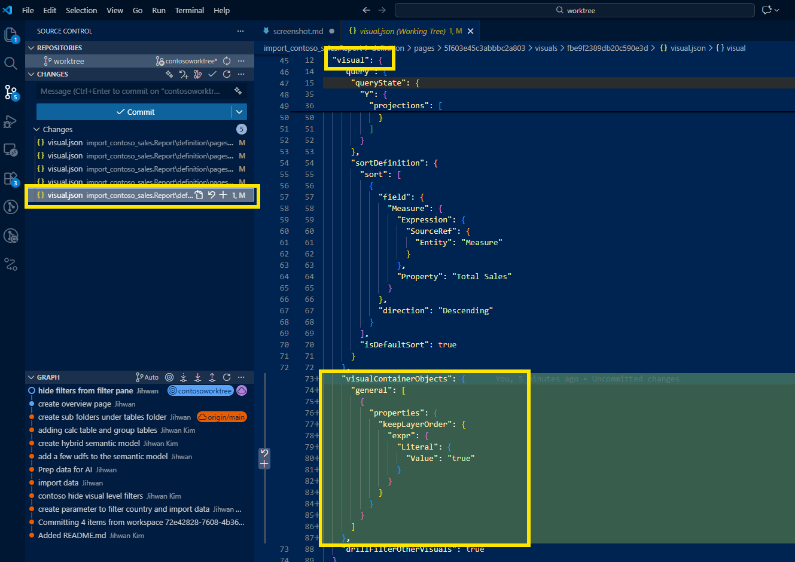
5. From a DevOps Standpoint: This Is Foundational
Code Review Angle
In a DevOps workflow, every change goes through a pull request. Before PBIR, filter visibility changes were invisible to reviewers; you'd have to open the .pbix file and click through each visual to verify. Now, a teammate reviewing my PR can see exactly what changed:
"Jihwan added isHiddenInViewMode: true to 12 filters across 5 visuals." Approved.
This is the transparency that enterprise teams need.
Consistency and Governance Angle
Organizations often have standards: "All visual-level filters should be hidden from consumers" or "All visuals must maintain layer order for accessibility." Before PBIR, enforcing these standards meant manual audits.
Now, you can write validation scripts that scan visual.json files:
- Flag any filter missing
isHiddenInViewMode: true - Flag any visual missing
keepLayerOrderinvisualContainerObjects
This opens the door to automated governance pipelines that run on every commit.
Automation Angle: AI-Assisted Bulk Changes
Here's where it gets exciting. Since PBIR is just JSON, you can prompt an AI to generate scripts that apply these settings across all visuals.
Example prompt for hiding all visual-level filters:
I have a Power BI PBIP report with multiple visual.json files under the path
report-name.Report/definition/pages/*/visuals/*/visual.json. Each visual.json has afilterConfig.filtersarray containing filter objects. I need a PowerShell script that:
- Finds all visual.json files recursively
- For each filter object in the
filterConfig.filtersarray, adds"isHiddenInViewMode": trueif it doesn't already exist or change it to true if it shows false.- Preserves the existing JSON formatting
- Outputs which files were modified
Example prompt for enabling maintain layer order:
I have Power BI PBIP visual.json files. I need a PowerShell script that adds the following
visualContainerObjectsblock inside thevisualobject of each file, if it doesn't already exist or change it to true if it shows false.Insert it after the
objectsproperty but beforedrillFilterOtherVisualswithin thevisualobject.
With these prompts, an AI can generate working scripts in seconds. This is the combination of PBIR's transparency and AI's code generation capabilities, a workflow that simply wasn't possible with binary .pbix files.
6. The Challenge: Absence Means Default
I realized this wasn't just about adding properties. This was about understanding that absence is meaningful in PBIR.
When you see a filter without isHiddenInViewMode, it means the filter is visible (default). When you see a visual without visualContainerObjects.general[].properties.keepLayerOrder, it means layer order is not maintained (default).
This mental model is crucial for:
- Reading PBIR files correctly: Don't assume missing properties are bugs
- Writing automation scripts: I am not fixing missing values; I am overriding defaults
- Troubleshooting: If a setting isn't working, check if the property exists at all
7. What's Next: Stepping Further
This experience left me with a new mental model: PBIR turns report settings into data, and data can be automated.
My next steps:
- Build a validation pipeline that checks for governance standards on every PR
- Create reusable AI prompts for common bulk operations (filter visibility, layer order, tooltip settings)
- Document the JSON schema patterns so my team understands the default-omission behavior
The click-by-click era is behind us. With PBIR, every setting is code. Every change is reviewable. Every standard is enforceable.
I hope this helps having fun in exploring PBIR and embracing this new era of Power BI DevOps!